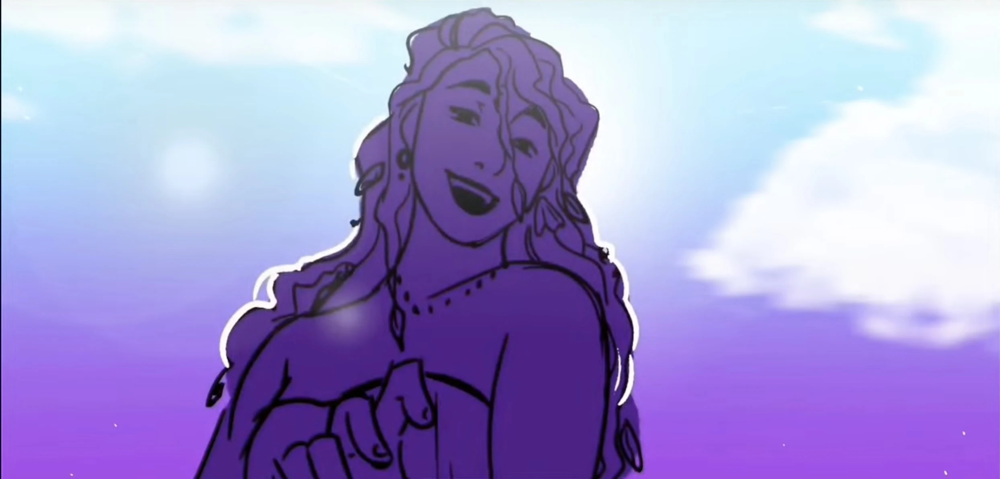

| Kalypso | |
|---|---|
|  | |
| Zeichnung von Gigi | |
| Biografie | |
| Titel | Göttin des Zaubers, des Vergessens und der ewigen Einsamkeit |
| Königin von Ogygia | |
| Status | Unsterblich |
| Hinter den Kulissen | |
| Auftritte | Weisheits Saga |
| Vergeltungs Saga | |
| Original Stimme | Barbara Wangui |
| Deutsche Stimme | Rolle offen |
Kalypso
... - Name (Song)
Kalypso ist eine kleinere Göttin. Sie bewohnt die Insel Ogygia in Einsamkeit, obwohl sie Odysseus zeitweise 7 Jahre lang dort festhielt.
Auftritte
Trivia
-
In der griechischen Mythologie ist Kalypso die Tochter von Atlas, einem der Titanen, der gegen die Götter
des Olymps kämpfte und dafür bestraft wurde, den Himmel zu heben.
- Das könnte erklären, warum sie im Musical in Ogygia isoliert wurde, vielleicht als eine Art Strafe für ihre Beziehung zu den Titanen.
- Im Musical wird es nicht ausdrücklich erwähnt oder angedeutet, aber in den klassischen Mythen wird unverblümt gesagt, dass Odysseus im Laufe der Jahre mit Kalypso geschlafen hat, allerdings gegen seinen eigenen Willen.
- In den Mythen ist Hermes tatsächlich der Bote, den Zeus schickt, um mit Kalypso zu sprechen. Er informiert sie über den „festen Beschluss“ des Zeus, dass Odysseus ohne die Hilfe der Götter, zu denen auch Kalypso gehörte, aufbrechen sollte. Sie hatte erklärt, dass sie ihn beraten würde, wie er seine Heimat am besten unbeschadet erreichen könnte, da sie nicht direkt helfen konnte, wenn es um ein Floß oder eine Mannschaft ging, ohne den Zorn des Zeus auf sich zu ziehen.